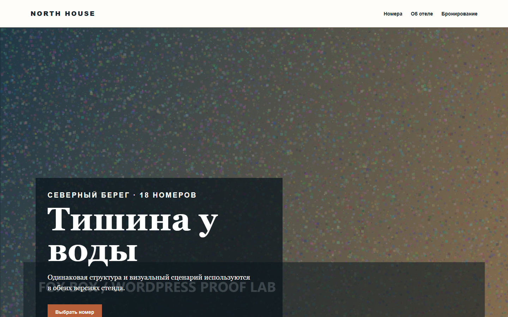
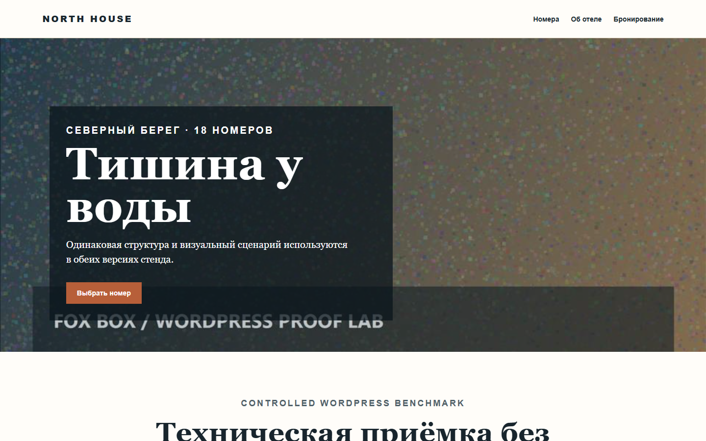
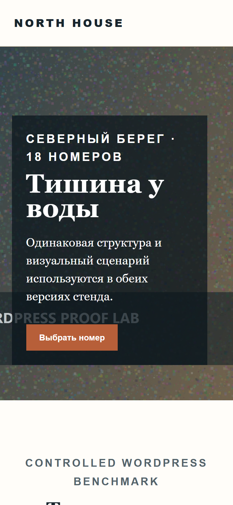
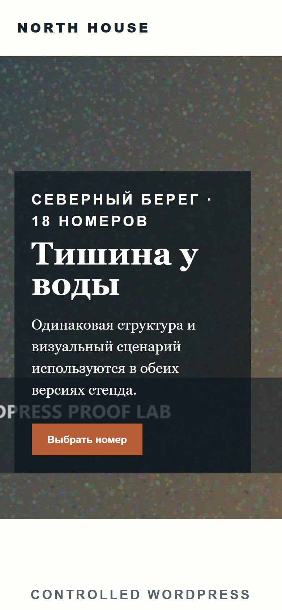

Зафиксировать
Версию, viewport, browser, число прогонов, селекторы и stop-gate до измерений.
 Fox Box
Fox Box
Собственный локальный стенд Fox Box сравнивает две чистые WordPress-сборки одной версии. По три холодных прогона на mobile и desktop, одинаковые условия, raw JSON и заранее определённая приёмка.
Две чистые сборки WordPress 6.8.2 используют одинаковую структуру страницы. Разница ограничена весом изображений, количеством CSS/JS, блокирующим скриптом, размерами изображений и lazy loading.
Версию, viewport, browser, число прогонов, селекторы и stop-gate до измерений.
Три новых browser context для каждого режима. Сохраняются JSON, скриншоты, HTTP и page errors.
Сжать изображения, сократить запросы, убрать блокировку, добавить размеры и отложенную загрузку ниже первого экрана.
Те же проверки, те же режимы и медианы. Ошибка страницы или критический regression останавливают приёмку.
Сеть намеренно не throttled: этот стенд сравнивает одинаковые локальные условия и не подменяет реальный аудит сайта из интернета.
| Режим | LCP | Передано | Запросы | Gate |
|---|---|---|---|---|
| Mobile 390 x 844 | 1804 > 1316 ms | 2,944,492 > 181,133 B | 30 > 6 | PASS |
| Desktop 1440 x 900 | 1816 > 1300 ms | 2,944,492 > 235,516 B | 30 > 7 | PASS |
Стенд использует демонстрационный сайт отеля только как контролируемую страницу. Название, контент и изображения не принадлежат клиенту.




JSON содержит условия, три прогона каждого режима, медианы, ошибки, запросы, байты и итог каждого gate. Публичные файлы не содержат паролей, cookies или клиентских данных.
Условия, median до/после, improvement и pass/fail по mobile и desktop.
Полные отчёты baseline и повторной проверки с отдельными измерениями и сетевыми итогами.
До оплаты письменно фиксируются страницы, доступы, резервная копия, метрики, изменения, exclusions и способ отката. Production начинается только после финансирования согласованного этапа.
Обсудить измеримый этап >